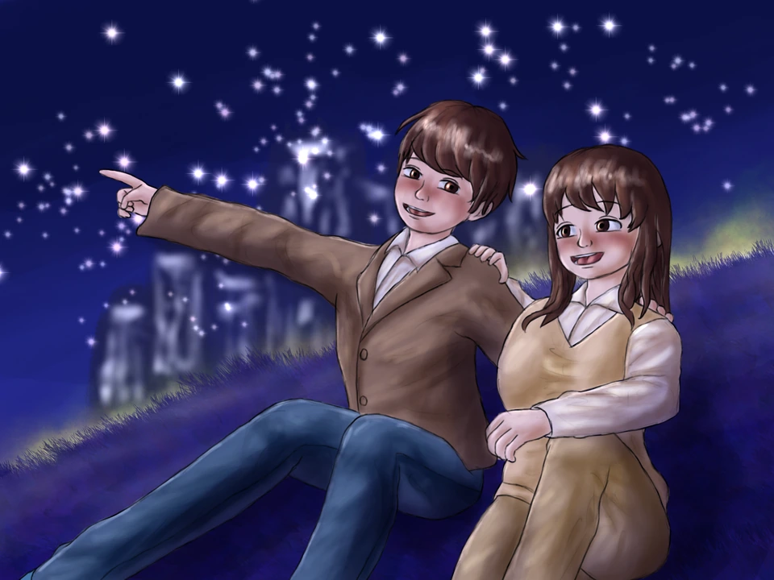

Official
Ad-free / No Login
Gallery 18+
Contact Me
Commissions & Support
I'm open to commissions, and any support for my work is always appreciated. If you're already commissioning, you can pay here.

Hi! I do digital art. I mainly draw breathplay, peril, and CNC themes.
I'm open to commissions, and any support for my work is always appreciated. If you're already commissioning, you can pay here.